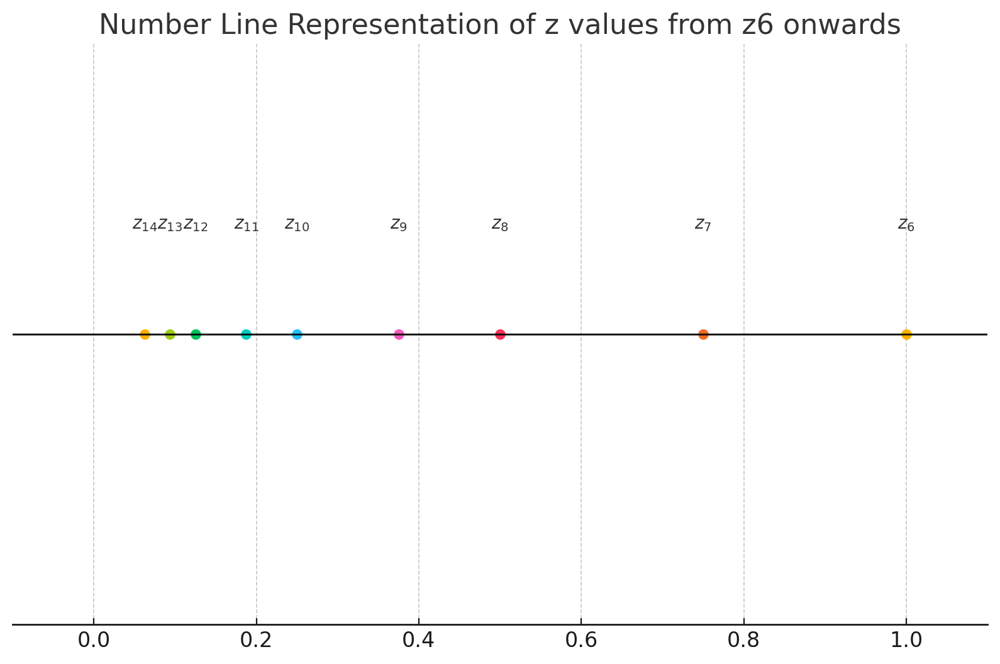
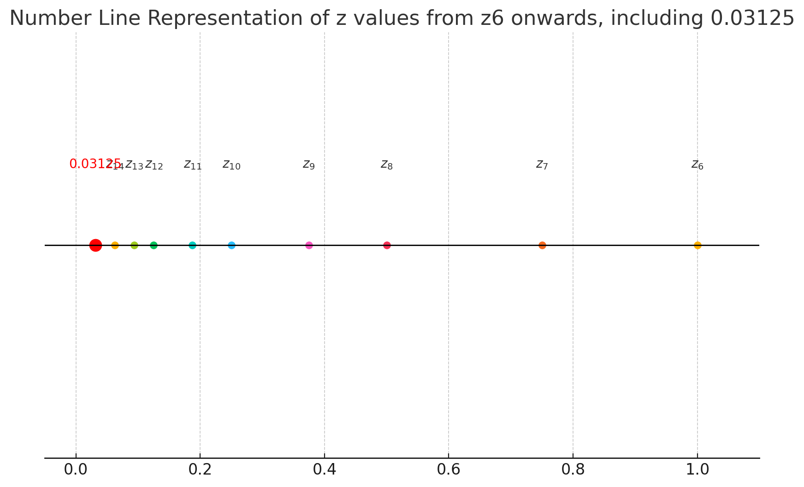

AMATH242/CS371: Introduction to Computational Mathematics
Chapter 1: Floating Point Systems
Numarical algorithms and computers operate on finite percision arithmetic.
We do not have the totality of R. In fact, we only have a "tiny" portion of R.
Definition 1.1: Let x^ be an approximation of a real number x.
Absolute error: Δx=x−x^
Relative error: δx=xx−x^
§1.1 Floating Point System
§1.1.1 Intro
Definition 1.2: A floating point system F⊆R is a subset of the real numbers whose elements have the form z=±(0.x1x2…xm)b×b±(y1y2…ye)b, where b is the base of the system, x1x2…xm is the mantissa, and y1y2…ye is the exponent
which is categorized by:
Base bf
Mantissa mf
Exponent ef
noted as F[b=bf,m=mf,e=ef]
and 0≤xi<b−1, 0≤yi<b−1, and 1≤i≤m and 1≤j≤e.
Example 1.1: F[b=10,m=3,e=2]
z=±(0.x1x2x3)×10±(y1y2)
An example: z=0.127×1019, in which x1=1,x2=2,x3=7,y1=1,y2=9.
Definition 1.3 (Normalization): A floating point number z∈F⊆R(z=±(0.x1x2…xm)b×b±(y1y2…ye)b) is normalized if x1≥1.
Example 1.1 (cont'd): F[b=10,m=3,e=2]
z1=0.127×1019 is normalized.
z2=0.034×10−5 is not normalized, but can be normalized to 0.340×10−6.
Example 1.2: F[b=2,m=2,e=2]
Let's consider all normalized positive numbers in F.
z=(0.x1x2)2×2±(y1y2)2
z1=(0.11)2×2(11)2=0.75×23=6
z2=(0.10)2×2(11)2=0.5×23=4
z3=(0.11)2×2(10)2=0.75×22=3
z4=(0.10)2×2(10)2=0.5×22=2
z5=(0.11)2×2(01)2=0.75×21=1.5
z6=(0.10)2×2(01)2=0.5×21=1
z7=(0.11)2×2(00)2=0.75×20=0.75
z8=(0.10)2×2(00)2=0.5×20=0.5
z9=(0.11)2×2(−01)2=0.75×2−1=0.375
z10=(0.10)2×2(−01)2=0.5×2−1=0.25
z11=(0.11)2×2(−10)2=0.75×2−2=0.1875
z12=(0.10)2×2(−10)2=0.5×2−2=0.125
z13=(0.11)2×2(−11)2=0.75×2−3=0.09375
z14=(0.10)2×2(−11)2=0.5×2−3=0.0625

Observations:
Floating point numbers are not eqally spaced. The spacing "jumps" by a factor of 2 at each power of 2.
There is an awkward gap between 0 and the smallest normalized number.
0 is unrepresentable in this system.
Definition 1.4: The distant from 1 to the next larger normalized floating point number is called the machine epsilon, denoted as ϵmach.
We have the following,
1=(0.10…00)b×b(0…01)b
next=(0.10…01)b×b(0…01)b
ϵmach=(0.00…01)b×b(0…01)b=b1−m
Therefore we also found following properties:
number m (# of digits in mantissa) is called precision.
ϵmach is also called machine precision.
ϵmach=b1−m.
IMPORTANT: the formula ϵmach=b1−m is subject to slight change in single and double precision formats.
Definition 1.5: The system F can be extended by including subnormal numbers which are implemented by: ±(0.0x2x3⋯xm)b×b−(b−1,b−1,⋯,b−1)b, where 0≤x2,x3,⋯,xm≤b−1 and (0.0x2x3⋯xm)b=0.
Recall: Closest to zero normalized number: ±(0.10⋯0)b×b−(b−1,b−1,⋯,b−1)b.
Example 1.2 (cont'd): F[b=2,m=2,e=2] ±(0.01)2×2−(11)2=±0.03125 is the only subnormal number in this system.

If we denote the smallest normalized positive number as λ, the subnormal numbers fill the gap between 0 and λ with the same spacing between λ and bλ.
Let's see another exmaple: F[b=2,m=3,e=2]
§1.1.2 Rounding, overflow, and underflow
Definition 1.6: Let G⊆R denote all real numbers that have the form z=±(0.x1x2…xm)b×by,y∈Z, i.e., we life the lower and upper limits for the exponent.
For ∀x∈R, then fl(x) denotes the nearest number to x in G and the operation x↦fl(x) is called rounding.
Example 1.2 (cont'd): F[b=2,m=2,e=2]
Here, z1=8∈G∈F. x1=2.8→fl(x1)=3 x2=4.5→fl(x2)=4 x3=1.25→ Tie!
Two common tie breakers:
round away from zero: x3=1.25→fl(x3)=(0.11)2×2(01)2=1.5
round to the one with an even last digit: x3=1.25→fl(x3)=(0.10)2×2(01)2=1
x4=7.7→fl(x4)=8∈F
Definition 1.7: We say fl(x) overflows if ∣fl(x)∣>max{∣z∣:z∈F}, and underflows if 0<∣fl(x)∣<min{∣z∣:z∈F}.
Example 1.2 (cont'd): F[b=2,m=2,e=2] x5=6.1→fl(x5)=6.
Thus, the following statement is false:
"Overflow occurs when x is bigger than the biggest normalized number in F."
Theorem 1.1 (Unit roundoff): Each real number x such that fl(x) is a normalized number in F has a relative error no larger than u=21ϵmach, which is called unit roundoff.
If x∈R such that fl(x) is normalized in F, then ∣δ∣=xx−fl(x)≤u=21ϵmach.
subnormal numbe correspond to bigger relative error.
§1.1.3 Standard floating point systems
Single precision format (32-bit)
Sign bit: s=1 for negative, s=0 for positive.
Exponent:
We have 28=256 exponents, therefore face value [0,255].
We want a range of signed exponents. The convention is face value subtracted by a bias of 127 →[−127,128].
When e={(00000000)2→−127(11111111)2→128 reserved for subnormals and special numbers.